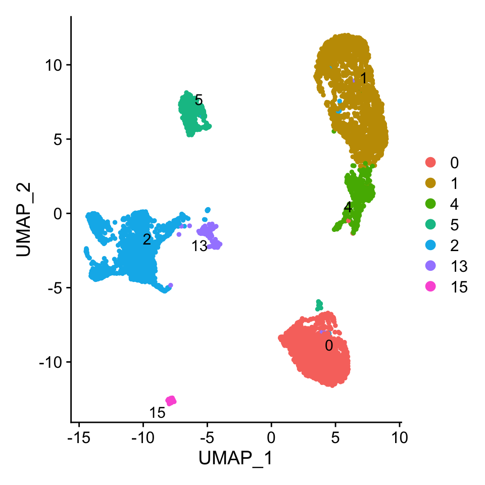
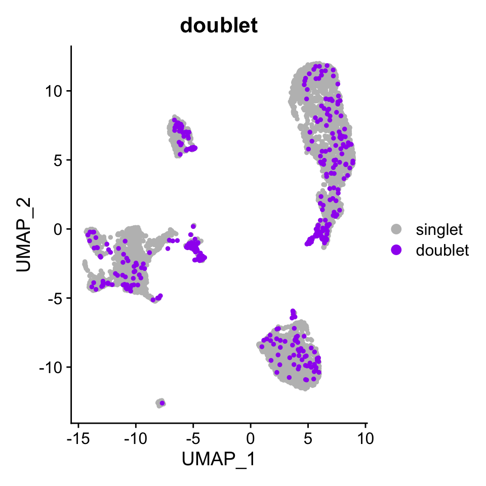

Multiplet Annotation Pipeline
2021-07-14
First required packages for the pipeline are loaded in.
library(Seurat)
library(Signac)
library(dplyr)
library(tidyr)
library(textclean)
library(ggplot2)
library(MASS)
library(stringr)
library(mclust)The functions required for the pipeline are added.
source("R/getMarkerPeak_method.R")
source("R/annotateDoublets_method.R")Ids of the multiplet cells are read in and have the following format
multiplets <- read.table("data/example_doublets_pbmc1.txt") %>% t() %>% as.vector()
head(multiplets)## [1] "_cell_1000" "_cell_1003" "_cell_1013" "_cell_1036" "_cell_1038"
## [6] "_cell_1044"The Seurat object processed by the Signac Pipeline is loaded.
pbmc.atac <- readRDS(file = "data/example_seurat_pbmc1.Rds")
pbmc.atac## An object of class Seurat
## 174800 features across 6143 samples within 1 assay
## Active assay: ATAC (174800 features, 174800 variable features)
## 2 dimensional reductions calculated: svd, umapCells in the Seurat object must have the same format as the multiplets ids.
head(colnames(pbmc.atac))## [1] "_cell_0" "_cell_1" "_cell_10" "_cell_100" "_cell_1000"
## [6] "_cell_1001"The peaks have the following formatting
head(row.names(pbmc.atac))## [1] "chr1:9860-10360" "chr1:11019-11519" "chr1:21019-21519" "chr1:21522-22022"
## [5] "chr1:29069-29569" "chr1:55902-56402"The desired grouping is chosen for annotation and set as the identifier of the Seurat object.
Idents(pbmc.atac) <- "grouped_clusters"
DimPlot(pbmc.atac, pt.size = 1, label = T, repel = T)
The pipeline works best with 200 cells per group for annotation but can be set as desired.
CellsPerGroup(pbmc.atac)## 0 1 4 5 2 13 15 <NA>
## 1518 1966 430 419 1623 135 52 0100 marker peaks are found for the clusters 0, 1, 2, 4 and 5 as they have the required number of cells. A 2 column dataframe is returned, with one column containing the id of the peak and the other the cluster that peak belong to. This is not a required step and the users can create their own personal marker peaks using the FindAllMarkers metod of Seurat. Be careful to have an uniform number of peaks for each group, we chose 100. The naming format in the column must follow “Cluster_
marker_peaks <- getMarkerPeaks(pbmc.atac, doublets = multiplets, n_peaks = 100, min_cells = 200)
head(marker_peaks)## peaks cluster
## 1591 chr17:74357149-74357649 Cluster_0
## 724 chr14:103346993-103347493 Cluster_0
## 1242 chr16:14950936-14951436 Cluster_0
## 949 chr15:83438614-83439114 Cluster_0
## 1780 chr17:78158088-78158588 Cluster_0
## 2200 chr19:47230207-47230707 Cluster_0The read count distributions of the multiplet cells on the marker peaks are found. Using this information, their types(homotypic/heterotypic) and origin clusters are found. A data frame containing the read count distributions on the clusters 0, 1, 2, 4 and 5 are also reported.
multiplet_annotations <- annotateDoublets(obj = pbmc.atac, marker_peaks = marker_peaks, doublets = multiplets)
head(multiplet_annotations)## cell_id Cluster_0 Cluster_1 Cluster_2 Cluster_4 Cluster_5
## _cell_1000 _cell_1000 0.02766798 0.75098814 0.005928854 0.21343874 0.001976285
## _cell_1003 _cell_1003 0.14172266 0.04581552 0.001832621 0.80879658 0.001832621
## _cell_1013 _cell_1013 0.05170877 0.85141159 0.001783061 0.09153046 0.003566122
## _cell_1036 _cell_1036 0.05775764 0.12768969 0.717440544 0.08861835 0.008493771
## _cell_1038 _cell_1038 0.71027822 0.16164636 0.002759255 0.12393654 0.001379628
## _cell_1044 _cell_1044 0.07941484 0.01253918 0.868338558 0.03134796 0.008359457
## doublet d.type d.annotation
## _cell_1000 doublet homotypic Cluster_1
## _cell_1003 doublet homotypic Cluster_4
## _cell_1013 doublet homotypic Cluster_1
## _cell_1036 doublet heterotypic Cluster_1.Cluster_2
## _cell_1038 doublet heterotypic Cluster_0.Cluster_1
## _cell_1044 doublet homotypic Cluster_2This data frame can be added to your Seurat object as meta data and the cells not reported are the singlets.
pbmc.atac <- AddMetaData(pbmc.atac, multiplet_annotations[,c("doublet", "d.type", "d.annotation"), drop = FALSE])
pbmc.atac@meta.data[is.na(pbmc.atac@meta.data$d.type), "d.type"] <- "singlet"
pbmc.atac@meta.data[is.na(pbmc.atac@meta.data$doublet), "doublet"] <- "singlet"
pbmc.atac@meta.data[is.na(pbmc.atac@meta.data$d.annotation), "d.annotation"] <- "singlet"Just the multiplets identified by the count based multiplet detection part of ATAC-DoubletDetector.
DimPlot(pbmc.atac, group.by = "doublet", pt.size = 1,
cols = c("singlet" = "grey", "doublet" = "purple"),
order = c("doublet", "singlet"))
The types of the same multiplets found by the Doublet Annotation Pipeline.
DimPlot(pbmc.atac, group.by = "d.type", pt.size = 1,
cols = c("singlet" = "grey", "homotypic" = "red", "heterotypic" = "blue"),
order = c("heterotypic", "homotypic", "singlet"))